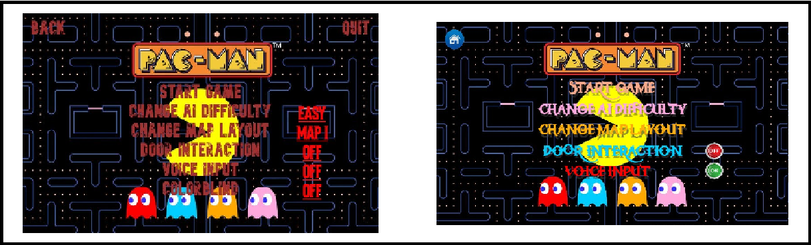

2. Introduction
Choose a classical electronic game and propose a modern version of it by using natural I/O devices and interaction methods – for example, vocal input or interaction via (pseudo-)haptic handheld devices and 3D output (i.e. adopting the virtual/augmented reality representations).
2.1 Purpose
The purpose of this project is to illustrate the process of creating a modern version of a classical electronic game, by adding new features and most importantly using natural I/O devices and interaction methods. Simply put, classical electronic games refer to the category of “old” simple games with little to no game knowledge required, just play and enjoy: Pong, Tetris and PacMan.
2.2 Theme
For our theme, we chose the game PacMan, which is normally a top-down platform game, in which the player character is always moving, and you use directional input to change directions: Up Down Left Right.
3. General description
3.1 General description
For our version, we decided to convert this game to a first-person experience, give full control to the player, rethink some of the original game mechanics and finally add a new interaction layer between human and computer in the form of audio input and output. This new layer will provide us with a way to add new features to gameplay while not removing any of the original feel of the game.
3.2 Changes
Changes to the original version of the game:
- Game style changed from Top-Down Platformer to First-Person Explorer
- Input modified to better suit the new game style
- Added a Map-Device function which allows the player to view the current state of the game, Map layout, Player location, and Score-Points location
- Added a toggleable game mechanic consisting of doors inside the labyrinth walls which can be opened and closed from fixed terminals
- Added a toggleable game mechanic consisting of audio interaction, the input of the player can be used to redirect and bait the Ghost AI into desired locations and the output consisting of the nearby ghosts will give information to the player related to which ghosts are close to the player. The sounds consist of simple sound dots and the frequency of the sound being played is related to how aware the player should be around each ghost: the faster the dots are heard, the smarter the ghost
4. Personas
4.1 Introduction
A Persona is a representative of a larger community of potential users, each category being different from the other in many aspects, but the main questions we are going to ask are:
- Do we want this person to use our product?
- Will they be able to use it properly?
- How likely is it for them to purchase or recommend it?
While not having precise answers to these questions, using the Personas we can focus our product to satisfy our potential users while not wasting resources trying to sell to those who will not buy it.
In the following section, we are going to present 4 different personas, including Primary, Secondary, Negative, and Customer personas, and give a scenario example for each user’s interaction with our product. For each of the personas excluding the Primary one, we will make a small conclusion that will improve the user experience while trying to avoid both technical and social problems thus increasing the selling probability of our product.
The 4 Personas we are going to describe are:
- Radu Coptescu - a boy in the 6th class that is at the same time lively and competitive, will represent the Primary Persona, a category that we are focusing our product on.
- Mihai Ixulescu - a 24 years old student that is focused on his professional life, but did not abandon our category of products. While representing the Second Persona, a category that may or may not use our product, we will also take into consideration the needs of this persona.
- Daniel Zulescu - a 34 years old man, currently working in a Human Resources department. While it is highly unlikely that this individual will use our product he might represent the Customer Persona, purchasing the product for someone else, like a child. While he is not a user, we still have to consider him as a potential buyer and consider it during product development.
- Vasile Moș - a 67 years old retired person. This individual has low to no experience using technology and is not tolerant of the idea that most products in our day are based on Human-Computer Interaction. He represents the Negative Persona, a category that will not be our focus while designing and selling our product.
4.2 Persona 1
- Type: Primary Persona
- Name: Radu Coptescu
- Background:
- Date of Birth:15.02.2009
- Gender: Male
- Location: Iasi, Romania
- Work place: -
- School: Attending Scoala Gimnaziala Stefan Barsanescu
- Tecnnology Level: Knows most basic functions of Mobile Devices or Laptops.
- Main Points:
- Experience with certain products: Enjoys playing strategy games.
- Dislikes about certain aspects: Dislikes random behaviours.
- No relevant disabilities.
- Social connections: Family, friends, and school colleagues.
- Working environment: No work environment.
- Goals:
- Practical Goals: If possible make a competition out of everything.
- Personal Goals: Always be the best in what you like.
- Business Goals: Have the best-paying job.
- Frustrations and Pain Points:
- Dislike to randomness may not work well with certain AI behaviours.
- No Disabilities;
- Rushes to make decisions;
- User may not take well some aspects of the game.
- Detailed Description:
- Scenarios
- the user was gifted access to our product from his parents
- while playing the game, he noticed some random behaviour from the ghost movement but no major actions were randomized.
- after figuring out the map layout and the best routes between points, a high score was achieved.
- eager to become the best player in his group of friends, he started recommending our product.
- our product is now purchased by many more users and the possibility of it being recommended increases significantly.
This candidate is our main focus, spending most of his time playing games and competing with others for the best score. It is highly likely that this user will recommend our product to many others in order to find new competitors.
In the mentions section there were mentioned many other games that rely on some extent of strategy, but also a small inconvenience to randomness. Taking these into account we should make the behaviours of the AI Ghosts less randomized or have less importance if their actions are sometimes randomized. (example: do not randomly turn around to chase the player”).
Let us imagine the next series of events:
4.3 Persona 2
- Type: Secondary Persona
- Name: Mihai Ixulescu
- Background:
- Date of Birth:25.05.1999
- Gender: Male
- Location: Iasi, Romania
- Work place: FlyMusic, Assitant Manager
- School: Attending Economics degree
- Tecnnology Level: Medium, Basic knowledge + job specific Tasks
- Main Points:
- Experience with certain products: Works constantly with Task Management and Communication products, also has experience in similar style games;
- Dislikes about certain aspects: Randomness and things out of his control;
- Disabilities relevant to our research: Colorblind;
- Social connections: Parents, brother, work friends.
- Working environment: Working from home and online, has 1 house pet, a cat.
- Goals:
- Practical Goals: Make yourself clear, and avoid misunderstandings.
- Personal Goals: Always put work before fun but also take breaks.
- Business Goals: Never let a client be disappointed.
- Frustrations and Pain Points:
- Dislikes hard-to-read UI and unclear Interactions.
- Disabilities: ColorBlind;
- Old phone may not support the game performance;
- Takes time to make decisions;
- Problems with the product: game lag and hard-to-read on mobile.
- Detailed Description:
- Scenarios
- our secondary persona decided to try our application on the mobile phone;
- the buy and installation process happened right before work started;
- in a break time the user decided to finally try the game and jumped right into the gameplay, skipping optional settings
- the product seemed to lag from time to time and the user was also confused about certain mechanics based on colour coding;
- the user decided to check the settings and found the Video settings where both the performance and the colour deficiency problems were both fixed.
- the user now enjoys our product and later he posted a game review praising the producer for the attention to both slow-performing devices and colour-deficient users.
This candidate plays a major role in the management department of a music store, organizing meetings, assigning and checking the task completion of his colleagues. In the mentions section, he stated that in his regular breaks, he often takes time to play games on the mobile device, most of which are from the same producer. All the mentioned games belong to the Fast-Paced category, multiple stretching to a maximum of 5 minutes of playtime.
Also in the mentions section, it was stated that our potential client suffers from colour blindness, a setting designed specifically for such disabilities is preferable.
Let us imagine the next series of events:
While our product may not always be used in the Primary target personas we have to take into consideration potential deficiencies or performance limitations when designing our product, and include options that allow more users to enjoy our product.
4.4 Persona 3
- Type: Negative Persona
- Name: Vasile Moș
- Background:
- Date of Birth:31.01.1956
- Gender: Male
- Location: Iasi, Romania
- Work place: Former owner of farming equipment distribution, retired.
- School: Master's Degree in Animal Nutrition.
- Tecnnology Level: Knows how to use a smart mobile device for basic tasks
- Main Points:
- Experience with certain products: Little to no experience with technological products.
- Dislikes about certain aspects: Dislikes useless distractions, and spending time with a “machine”;
- Disabilities relevant to our research: Bad eyesight, bad hearing, slow eye-hand coordination;
- Social connections: Former colleagues and their families, might include potential Primary Persona users
- Working environment: No working environment;
- Goals:
- Practical Goals: Don’t rely on technology so much.
- Personal Goals: I’d always prefer to spend time with a person, not some machine.
- Business Goals: I did my part, but I can land a hand sometimes.
- Frustrations and Pain Points:
- Dislikes towards technology and lack of human interaction make this user not a good audience for our product.
- Bad eyesight and motor functions make it hard for the user to interact with our product
- Old devices might make our product seem weak in general.
- Users with the same disabilities have an unfair disadvantage in completing the game.
- Detailed Description:
- Scenarios
- the individual noticed an user from the Primary or Secondary category of personas using our product and started a conversation.
- during the said conversation, he expressed his disbelief towards technology and playing alone but was encouraged to try our product anyway;
- the user experiences are not favourable because of his disabilities working against the fast-paced strategy flow of the product.
- -it is highly unlikely that our product will sell to this individual.
It is safe to assume that this persona is not what we are looking for, therefore it represents the category of Negative personas. There are limitations to both the devices owned by the user and the quality of his interaction capabilities.
In the mentions section, it was stated that he does not agree with technology playing an important role in one’s life. Taking all these facts into consideration we are going to focus product advertisements on the younger generation and Primary Personas.
Let us imagine the next series of events:
Needless to say, this Persona offers no potential profits to our product’s economy and it should be avoided.
4.5 Persona 4
- Type: Customer Persona
- Name: Daniel Zulescu
- Background:
- Date of Birth:20.04.1989
- Gender: Male
- Location: Iasi, Romania
- Work place: Bitdefender, Human Resources
- School: Computer Science Degree.
- Tecnnology Level: Able to complete complex tasks on both desktop and mobile devices.
- Main Points:
- Experience with certain products: Experience with communication and time management products, no experience with products similar to ours.
- Dislikes about certain aspects: Paying for useless or joke products.;
- Disabilities relevant to our research: No relevant disabilities.
- Social connections: Family and colleagues.
- Working environment: Office worker, constantly interacting with other humans.
- Goals:
- Practical Goals: Spend every second doing something that matters.
- Personal Goals: Always be proud of what you do.
- Business Goals: Offer the best you can to your employer.
- Frustrations and Pain Points:
- Dislikes slow and repetitive User Experience.
- Not willing to pay for a variety of products including ours.
- No relevant disabilities.
- No difficulties in completing tasks.
- Detailed Description:
- Scenarios
- The individual is asked to purchase our product for someone who can't purchase it themselves (for example, a child).
- The individual tries to look for our product and view any potential reviews, or get a vague sense of what our product represents.
- Upon closer inspection, the user decides to balance the value of the product with the demanded price.
- After considering the option, the individual decided to purchase our product for the potential primary user.
This is the Customer Persona, a “ghost” user that most likely purchased our product for someone else. Most aspects of what this user likes or dislikes are irrelevant to the production and distribution teams but it must be brought to our attention one potential dislike. As it was stated previously the unwillingness to pay for “useless” products might make it difficult to convince the individual to even buy our product for someone else.
In the mentions section, it was stated that exceptions to such beliefs are possible if the product seems worth purchasing for someone else, very likely from the Primary Persona category.
Let us imagine the next series of events:
It is important to advertise our product properly, taking into consideration Customer personas, thus we must include mentions that might intrigue and convince potential buyers into purchasing our product.
5. UI - Storyboard form
5.1 User flow
5.2 Main menu (Desktop vs Mobile)
5.3 Credits (Desktop vs Mobile)
5.4 Settings (Desktop vs Mobile)
5.5 Pre Play Screen (Desktop vs Mobile)
5.6 Difficulty (Desktop vs Mobile)
5.7 Map Layout (Desktop vs Mobile)
5.8 Level Failed (Desktop vs Mobile)
5.9 Level Complete(Desktop vs Mobile)
6. Interaction Types
There are going to be 3 main ways for our users to interact with the product, 2 of them being dependent on the platform used to host the application and the final one being a toggle option which allows the player to choose if he wants to use the interaction and the features it provides.
6.1 Keyboard + Mouse Input
This interface is used in the desktop device format and it consists of two physical devices:
- The Keyboard is used for movement actions which allow the player to explore and progress through levels. The default values for the keyboard actions are W A S D for Forward Strafe-Left Backward Strafe-Right. Two more actions can be used through the Keyboard, the Pause Game which is defaulted to the Escape Key, and the Map-Device which is defaulted to F. These actions can be modified to custom values by the user in the Settings -> Controls Menu.
- The Mouse is used for redirecting the game camera which allows the player to look around the environment of the game. Another function of the mouse is to navigate the Menu Screens by clicking on the respective buttons and modifying settings for a better user experience.
6.2 Mobile Touch-screen Input
This is the interaction layer used for hosting the application on mobile devices:
- While the Menu Screens and the overall aspect of the application remain unchanged we are needed to use the touch-screen function of the mobile device for interaction.
- The Menu Screens are easily usable by touching the buttons where normally a mouse click would be used.
- For the In-Game part of the application, we need to implement a virtual overlay over the game screen. It will consist of:
- two virtual joystick-like controls, the left one used for movement and the right one for looking around;
- two small buttons which are used for the Pause Game and the Map-Device functions.
6.3 Audio Input-Output
This interaction layer has been implemented for the audio mechanic of the game consisting of two ways of interaction:
- Audio Input: Given by the player through the microphone component of the hosting device it will immediately inform nearby ghosts of the player’s location at the moment of the Audio Input. While this might be viewed as a negative only effect, players might strategize and trick ghosts into entering blockades or leaving zones the player has to enter in order to progress.
- Audio Output: Given by the nearby ghost through the speaker component of the hosting device, it will inform the player of the location of nearby ghosts. This mechanic is useful as it will give the player information about, what ghosts are near, how far are they and if they are nearing the player or running away from him.
7. References
- Sabin Corneliu Buraga , Site-ul disciplinei "Human-Computer Interaction" parte a UAIC
- W3School
- Figma
- Replit
- Scholarly Html